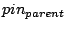

PCI interrupt routing consists of figuring out which platform-specific interrupt is asserted when a given PCI interrupt signal is asserted. On x86 machines, this consists of figuring out which input pin on an interrupt controller is asserted when a given PCI interrupt signal is asserted. This can include a detour through a programmable interrupt router in between the PCI interrupt signal and the interrupt controller.
Most PCI interrupt routing information is platform-specific; however, the PCI specification does define a specific case where interrupt routing is platform independent. Specifically, if an add-in card contains its own PCI-PCI bridge, then the interrupt pins are for the PCI slots behind the PCI-PCI bridge are mapped onto the interrupt pins on the upstream side of the PCI-PCI bridge.
If you assign the values 0 - 3 to INTA# - INTD# then the mapping can be described as:
where  is the upstream interrupt pin on the PCI-PCI bridge and and are the PCI slot and pin, respectively, of the interrupt signal being routed across the bridge. Thus, INTA# of slot 0 is mapped to INTA# on the bridge. For slot 1, INTA# is mapped to INTB# on the bridge, and INTD# is mapped to INTA# on the bridge. A full table of the mapping can be found in Table 24-13 of PCI System Architecture [5].
Although the PCI specification only defines this routing for PCI-PCI bridges in add-in cards, some x86 systems also use this mapping for PCI slots behind PCI-PCI bridges that are not in add-in cards but are part of the main chassis. The rule there appears to be that if no other routing information is provided by the BIOS for a given PCI bus behind a PCI-PCI bridge, the above mapping should be used to route the interrupts across the PCI-PCI bridge to the parent PCI bus.
The first PCI interrupt routing table provided by the x86 BIOS is the $PIR table, so named for it's four character signature: ``$PIR''. This table describes how PCI interrupt signals are connected to input pins on a programmable interrupt router. In addition, it provides details that can be used by the operating system to either program the interrupt router directly or to ask the PCI BIOS to route individual links. Note that the $PIR table only knows about ISA IRQs, so it cannot in general be used with APIC. An exception to this rule is that some early APIC systems only route ISA IRQs via their sole I/O APIC and still use an programmable interrupt router and a $PIR table to route PCI interrupts onto ISA IRQs. Details on the format and layout of the $PIR table can be found in pages 233 - 238 of PCI System Architecture [5].
The main body of the $PIR table consists of a variable-sized array of slot entries. Each slot entry contains details about a single PCI slot such as whether or not the slot is an embedded device in the main chassis or whether the slot represents a physical slot on the motherboard. Each slot entry also contains an array of four pin entries containing the routing information for INTA#, INTB#, INTC#, and INTD# for the slot. Each pin entry contains a byte holding a link identifier and a bitmap of valid ISA IRQs for this pin entry. Since each slot entry always contains pin entries for all four pins, but not all slots on embedded devices use all four pins, a pin can be marked as disconnected by using a link identifier of zero.
Each non-zero link identifier refers to a specific input pin on the programmable interrupt router. Thus, all of the (slot, pin) entries that have the same link identifier are all physically connected to the same input pin and will always share the same interrupt. Also, routing a link to an IRQ routes all of the (slot, pin) entries connected to that link to that IRQ.
Routing a PCI interrupt to an ISA IRQ using $PIR is a mostly straightforward process. First, the bus, slot, and pin of the PCI interrupt to be routed are used to lookup a (slot, pin) entry in the $PIR table. The link for the PCI interrupt is then taken from the (slot, pin) entry. If the link is already routed to an IRQ, then the routing is complete. Otherwise, an IRQ must be chosen and the link must be routed to the IRQ.
Once the operating system has picked an IRQ for an unrouted link, there are two ways the link can be routed to that IRQ. First, the operating system can manually program the interrupt router to route the link. Second, the PCI BIOS provides a BIOS call to route an individual link to a specific IRQ.
To aid with the first approach, the $PIR table includes the PCI location (bus, slot, and function) and device ID of the interrupt router. The device ID can be used to determine an interrupt router driver. For some routers, for example, the programming model is that the link identifier in the (slot, pin) entries is the offset of a single byte register and that the IRQ to be used is written to the register to route the link. This approach requires the operating system to maintain several different interrupt router drivers, and new routers aren't supported until a new driver is written or an existing driver updated.
To support $PIR routing, FreeBSD maintains data about each link that appears in the $PIR table. During boot, the kernel walks the $PIR table to build a list of links and allocate per-link data such as whether or not the link is routed, and which IRQ it is routed to. The kernel also determines if each link has already been routed by the BIOS (and if so, to which IRQ). To do this, it walks each slot entry in the $PIR table. It then examines the intpin and intline PCI config registers for each function at the PCI bus and slot specified in the slot entry. If a function has a valid intline config register, then the kernel assumes that the BIOS has routed the link associated with this function to the IRQ in the intline register. It determines the link by using the intpin register to index the pin entry in the $PIR slot entry. The kernel also builds the bitmap of valid IRQs for each link during this table walk. In theory, all of the (slot, pin) entries that refer to the same link should have the same bitmap of valid IRQs. In practice, this is not always the case. As a result, FreeBSD uses the intersection of the various bitmaps (via a bitwise AND) to determine the bitmap of valid IRQs for a given link.
The trickiest part of $PIR routing is figuring out which IRQ to use for a link that was not routed by the BIOS. FreeBSD uses a rather conservative approach that favors reliability at the expense of possibly forcing more interrupt sharing than is strictly necessary. If the link has only one valid IRQ in its bitmap, then that IRQ is used. However, if there is more than one valid IRQ, the process is slightly more complex. When the kernel does its initial scan of the $PIR table to build the per-link data, it also builds a bitmap of IRQs that the BIOS used to route links. Then when it comes time to pick an IRQ for an unrouted link, the kernel will try to use one of the IRQs that the BIOS used as those IRQs are known to work. If none of the IRQs used by the BIOS are valid for the link, then the kernel tries to use one of the IRQs in a system-wide bitmap of PCI-only IRQs in the $PIR header. If the kernel is still not able to find an IRQ at this point, it tries to pick an IRQ from a static bitmap of IRQs.
FreeBSD just uses the PCI BIOS call to route a link to an IRQ to avoid the maintenance overhead of interrupt router drivers. While some older systems may not include the BIOS call, these older systems also will typically route all the links to IRQs during boot (or provide a BIOS option to do so). Thus, for these systems the ability to route links is not critical.
An example of the link table portion of the output from pirtool can be find in Figure 3. This machine contains at least six different links: 0x60, 0x61, 0x62, 0x63, 0x68, and 0x6b. The first entry indicates that the INTA# pin for slot 2 on bus 0 is connected to the 0x60 link, for example. This machine only has one expansion slot, and the four intpins in that slot are routed to links 0x62, 0x63, 0x60, and 0x61.
FreeBSD allows the user to tweak the $PIR routing via loader tunables. First, the bitmap of IRQs used as the last resort when choosing an IRQ for an unrouted IRQ can be set via hw.pci.irq_override_mask. Probably more useful, however, is the ability to specify the IRQ for individual links. The tunable for this is hw.pci.link.link.irq where link is the link to route, and the value of the tunable is the IRQ to route the link to. The link is specified as a hexadecimal value with a leading ``0x'' identical to the output from pirtool as well as all kernel output containing $PIR link identifiers. For example, to route link 0x60 to IRQ 11, set the loader tunable hw.pci.link.0x60.irq=11. Any IRQs used in user-specified routings are included in the mask of IRQs used by the BIOS when choosing IRQs for unrouted links. Thus, if a BIOS routes only some links and routes them all to IRQ 10, but IRQ 11 is known to be free for PCI interrupts, one can force the system to route one or more of the unrouted links to IRQ 11 to split some of the interrupt load simply by routing a single link to IRQ 11 using a tunable.
When APIC was introduced on x86, a new table was introduced to describe the routing of PCI interrupts to I/O APIC input pins. This table is known as the MP Table, and its format is described in the Multiprocessor Specification [4]. The MP Table contains several different types of entries including entries enumerating processors and I/O APICs. It also contains entries describing all device interrupts that are connected to I/O APIC input pins, and these entries are used for routing PCI interrupts.
Each interrupt entry in the MP Table contains a device interrupt as the source, and an I/O APIC input pin as the destination. The source interrupt contains a bus type (such as ISA or PCI), a bus ID, and an IRQ value. For PCI interrupts, the bus ID is the PCI bus number of the slot the interrupt belongs to. The IRQ value contains both the PCI slot and intpin. The lower two bits contain the intpin (0 means INTA#, etc.), and bits 2 through 6 contain the slot. The destination is specified as an APIC ID of an I/O APIC and an input pin number.
Given this, routing a PCI interrupt using the MP Table is fairly simple. The kernel simply walks the MP Table until it finds an entry whose source interrupt matches the PCI bus, slot, and intpin. It then uses the destination I/O APIC input pin as the PCI interrupt's destination.
An example of the interrupt entries output from mptable(8) can be find in Figure 4. This system contains three I/O APICs with APIC IDs of 8, 9, and 10. The ISA IRQs are connected to the first sixteen pins on the first I/O APIC. The PCI interrupts for PCI busses 0 and 4 are connected to other pins on the first I/O APIC. The only PCI interrupt on PCI bus 2 is connected to the first pin on the second I/O APIC, and the PCI interrupts on PCI bus 3 are connected to the first four pins on the third I/O APIC.
The Advanced Configuration and Power Interface (ACPI) was developed in part to provide a unified interface to configuration management for x86 machines [1]. Both the $PIR table and the MP Table are among the configuration methods and tables merged into the ACPI umbrella. Thus, ACPI provides a unified interface to PCI interrupt routing on x86 that replaces both $PIR and the MP Table. There are four main components to ACPI's interrupt routing support: global system interrupts (GSIs), the global _PIC method, PCI interrupt link devices, and per-PCI bus _PRT methods.
ACPI uses a cookie system to ``name'' interrupts known as Global System Interrupts. Each interrupt controller input pin is assigned a GSI using a fairly simple scheme. For the 8259A case, the GSIs map directly to ISA IRQs. Thus, IRQ 0 is GSI 0, etc. The APIC case is slightly more complicated, but still simple. Each I/O APIC is assigned a base GSI by the BIOS. Each input pin on the I/O APIC is mapped to a GSI number by adding the pin number (zero-based) to the base GSI. Thus, if an I/O APIC has a base GSI of N, pin 0 on that I/O APIC has a GSI of N, pin 1 has a GSI of N + 1, etc. The I/O APIC with a base GSI of 0 maps the ISA IRQs onto its first 16 input pins. Thus, the ISA IRQs are effectively always mapped 1:1 onto GSIs. More details about GSIs can be found in Section 5.2.11 of the ACPI 2.0c spec [2].
The global _PIC method is a global ACPI function that the operating system calls during boot to inform ACPI which set of interrupt hardware it plans to use. It accepts a single input parameter which indicates the interrupt mode to use. For x86 platforms, the parameter has two possible values: 0 indicates PIC mode (that is, 8259As), and 1 indicates APIC mode. The mode defaults to PIC mode on boot. Typically, the implementation of _PIC saves the interrupt mode in a global variable that is used by subsequent calls to _PRT methods to determine which routing tables to return. Figure 5 contains a sample implementation of _PIC. More details can be found in Section 5.8.1 of the ACPI 2.0c spec [2].
Each input pin on a programmable interrupt router is represented as a device in the ACPI namespace. These devices are called PCI interrupt link devices and are identified with a PnP ID of PNP0C0F. The destination of the link is set via an IRQ resource in the device's resource list. It is managed using the _CRS, _PRS, and _SRS methods just like the IRQ resource is managed for other ACPI devices such as built-in serial ports on the LPC bus.
FreeBSD manages PCI interrupt link devices in much the same way it handles links in the $PIR table. One difference is that ACPI provides a standard way to query the link for its current setting via the _CRS method. In practice, however, _CRS is not always implemented, so the PCI interrupt link driver does examine the PCI intline config register of any devices that use a link to determine which IRQ, if any, the BIOS routed the link to. Another difference is that ACPI allows links to be turned off completely via the _DIS method. In fact, FreeBSD turns off all links during boot and explicitly turns them on only when they are needed to route interrupts.
Routing a link to an ISA IRQ follows much the same process for both PCI interrupt link devices and $PIR links. One difference is that all PCI interrupt link devices are disabled during boot, so all of them must be routed to an IRQ on first use. However, the PCI interrupt link device will simply route the link to the IRQ assigned by the BIOS if the BIOS assigned one during boot and that IRQ is still valid (the IRQ might not be valid if a link device is used in APIC mode and has a different set of valid GSIs in APIC mode than in PIC mode). The PCI interrupt link driver builds a mask of known-good ISA IRQs from the IRQs used by the BIOS similar to the $PIR driver. However, ACPI doesn't provide a global mask of PCI-only IRQs similar to the one found in the $PIR table header. The PCI interrupt link driver also does not include a static mask of possible ISA IRQs or honor the hw.pci.irq_override_mask sysctl. On the other hand, the ACPI System Control Interrupt (SCI) is always shareable with PCI interrupts, so it is added to the mask of known-good ISA IRQs when in PIC mode. Thus, there is always at least one IRQ in that mask when operating in PIC mode, removing the need for both the global mask of PCI-only IRQs and the static mask of possible ISA IRQs.
Routing a link to a non-ISA GSI is fairly simple. In that case, there aren't any complications with trying to determine which of the possible interrupts really are usable. Instead, all of the possible GSIs are usable, and a simple weighting scheme is used to balance the links across the available GSIs.
As with the $PIR code, the PCI interrupt link driver allows the user
to override the routing for individual links via tunables. The format
of the tunable is hw.pci.link.link.irq where
link is the link to route, and the value of the tunable is the
GSI to route the link to. The link is specified as the last
component of the PCI interrupt link devices path in the ACPI
namespace. For example, to route the PCI interrupt link device
_SB_.PCI0.ISA0.LNKA to ISA IRQ 11, set the loader tunable
hw.pci.link.LNKA.irq=11. Unlike the $PIR code, any IRQs
used in user-specified routings are not included in the mask of
known-good ISA IRQs used by the BIOS.
The meat of PCI interrupt routing via ACPI is the _PRT method. Each PCI bus that ACPI provides interrupt routing information for appears as a device in the ACPI namespace. Each of these devices contains a _PRT method that returns an array of objects describing the interrupt routing for slots on that PCI bus.
Each object contains four members that describe the routing for a single PCI interrupt. The first member is an ACPI PCI address using the same format as _ADR. Thus, the upper four bytes contain the slot, and the lower four bytes contain the function. Since the PCI function is not part of a PCI interrupt's address, it is always specified as a wildcard value of 0xFFFF and should be ignored by the operating system. The second member is a single byte indicating the intpin. A value of 0 specifies INTA#, 1 specifies INTB#, etc.
The third and fourth members define the destination of the interrupt. If the third value is either zero or an empty string, then the fourth value is a GSI and the PCI interrupt is hard-wired to that GSI. This type of mapping is just like the MP Table I/O interrupt entries which map PCI interrupts to specific I/O APIC input pins. If the third value is not empty, then it is the name of a PCI interrupt link device in the ACPI namespace, and the fourth value is a resource index. The resource index indicates which of the resources of the PCI interrupt link device the interrupt is connected to. In practice, though, some BIOSes bogusly include a name of a link device even in entries that are routed via a hardwired GSI, and no systems to date use a resource index other than zero. Thus, as a workaround for the busted systems, FreeBSD ignores the third value and assumes the fourth value is a hardwired GSI if the fourth value is not zero. The _PRT method is described in further detail in Section 6.2.8 of the ACPI 2.0c spec [2].
Figure 6 contains a portion of an example _PRT. Specifically, it includes the first entry in the table. This corresponds to the PCI interrupt for PCI bus 3, slot 7, INTA# and can be compared with the routing for this same interrupt in Figures 3 and 4. First, note there are actually two routing tables declared as constants: PIC3 is used for PIC mode, and APC3 is used for APIC mode. The _PRT method checks the value of the PICF global variable to determine which table to return to the operating system. Recall that PICF is set in the _PIC method in Figure 5. For PIC mode, the interrupt is routed to the LNKC device, which is an ACPI PCI interrupt link device corresponding to link 0x62 from the $PIR table. For APIC mode, the interrupt is routed to GSI 66. For this machine, ACPI assigns a base GSI of 64 to the I/O APIC with an APIC ID of 10. Thus, GSI 66 corresponds to pin 2 on that I/O APIC which matches the routing in the MP Table for this PCI interrupt.
Note that ACPI allows PCI interrupt link devices to be specified in _PRT entries in APIC mode. Thus, ACPI allows the BIOS to communicate an interrupt routing where a PCI interrupt signal is connected to an input pin on a programmable interrupt router whose output pins are connected to arbitrary input pins on one or more I/O APICs. Neither the $PIR table or MP Table allow for this configuration since the $PIR table assumes all IRQ values are less than 16, and the MP Table assumes all PCI interrupts are mapped to hardwired I/O APIC input pins.